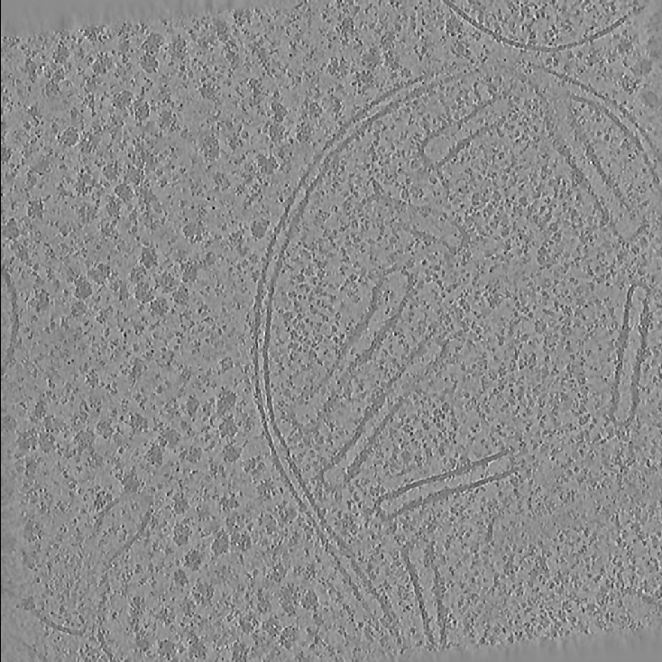
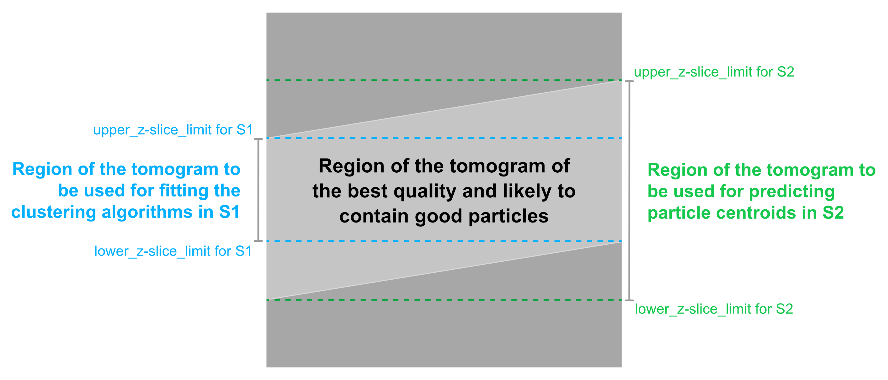

Step 1 (S1): Generate semantic segmentations¶
Inputs for S1¶
Inputs for S1 are provided through a YAML file containing parameters. An example is provided in examples/s1_params_example.yaml.
Dataset related¶
These parameters are described in detail below:
dataset_name is also the name of the directory where all the outputs will be saved.
inputs:
[
{
tomogram: <path_to_tomogram_1>,
lower_z-slice_limit: <upper_zslice_where_the_lamella_starts>, #[Optional]#
upper_z-slice_limit: <lower_zslice_where_the_lamella_ends> #[Optional]#
},
{
tomogram: <path_to_tomogram_2>,
lower_z-slice_limit: <upper_zslice_where_the_lamella_starts>, #[Optional]#
upper_z-slice_limit: <lower_zslice_where_the_lamella_ends> #[Optional]#
},
]
inputs is a list (enclosed within square brackets) that can be expanded with similar entries, enclosed in curly brackets as shown above.

Fig. 1: Central Z-slice from an example input tomogram.
Tomogram obtained from CZI-10301 (Khavnekar, S. et al. Microscopy and Microanalysis (2023))
lower_z-slice_limit and upper_z-slice_limit denote the upper and lower bounds on the Z-slices where the tomogram is of the highest quality and is most likely to contain good particles. An example input tomogram denoised with TomoEED is shown in Fig 1.
Note
These bounds are only considered for fitting the clustering algorithm that separates particle voxels from background voxels. Particle localizations may still be predicted on Z-slices beyond the mentioned bounds. Using these bounds in S1 may help avoid the contaminants from the periphery of the lamella from confounding the clustering algorithm. (See also: Fig 2). Moreover, these allow help process larger tomograms without increasing the processing speed and GPU memory requirement.
The entries marked as #[Optional]# may be omitted. If you do not wish to specify these, these lines should be deleted from from the param_file.yaml.

Fig. 2: Z-slice bounds for the two steps in PickET.
The figure shows a slice of a tomogram along the Z-axis along with
annotations for the upper and lower bounds to be specified for a PickET run
PickET core parameters¶
We recommend using the neighborhood_size: 5 for picking particles from tomograms. This corresponds to a neighborhood of \(5 \times 5 \times 5\) voxels around a given voxel.
This parameter specifies the number of voxels to be used for fitting the clustering algorithm. Reducing this number will reduce the computational memory/time, but will come at the cost of accuracy. On the contrary, increasing this number will increase the time/memory but may result in better segmentations.
We recommend users to optimize this number according to the computing time and GPU memory available. This number needs to be optimized only once for a computing node. Once optimized, the same can be used for all datasets that will be processed using PickET on that computing node in the future.
Note
The number of neighborhoods being used in a run is shown in the terminal output for the run. It will be shown as Features array of shape: (<num_neighborhoods_being_used>, <num_features_extracted>) in the terminal output.
Feature extraction parameters¶
feature_extraction_params:
[
{
mode: ffts,
n_fft_subsets: 64,
},
{
mode: gabor,
num_sinusoids: 10,
num_neighborhoods_subsets: 5,
num_parallel_filters: 8,
num_output_features: 64
},
{
mode: intensities
}
]
These parameters describe the feature extraction modes. Similar to inputs, feature_extraction_params is also a list of dictionaries. Each dictionary defined in this list describes a feature extraction mode. Here, we provide three feature extraction modes ffts, gabor and intensities.
First, for mode: ffts, there is only one parameter, n_fft_subsets. This parameter defines how many neighborhoods will be processed simultaneously for feature extraction. Higher the value, the faster the FFT feature extraction, but higher the computational memory required.
Second, for mode: gabor, there are four key parameters. The number of Gabor filters used for Gabor feature extraction is the cube of the num_sinusoids. The user may choose to not tweak this parameter. The num_neighborhoods_subsets and num_parallel_filters define the number of neighborhoods and number of Gabor filters to be processed simultaneously. Increasing the num_neighborhoods_subsets and reducing the num_parallel_filters will result in the feature extraction requiring less GPU memory, but will result in longer runtimes. The num_output_features defines the number of features with the highest standard deviation to be used for clustering. The user may choose not to tweak this parameter.
Third, for mode: intensities, there are no parameters. It will use the voxel intensities obtained from the neighborhoods as features for clustering.
Clustering methods¶
clustering_methods is a list that describes the clustering algorithms to be used. In this example, both KMeans as well as GMM will be used for clustering.
Output directory¶
As the name suggests, output_dir describes the path to the directory where the output segmentations will be saved.
Note
The segmentations will be saved in output_dir/dataset_name/ directory.